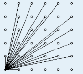

辽宁师范大学 • 张大为@https://daweizh.github.io/noip/
定义：除了1和它本身以外不再有其它因素。
#include <iostream> using namespace std; bool isprime(int n){ if(n<=3) return true; for(int i=2;i<n;i++){ if(n%i==0) return false; } return true; } int main(){ for(int i=1;i<=100;i++){ printf("%3d is prime: %d \n",i,isprime(i)); } return 0; }
#include <iostream> #include <cmath> using namespace std; bool isprime(int n){ if(n<=3) return true; int rt = sqrt(n); for(int i=2;i<=rt;i++){ if(n%i==0) return false; } return true; } int main(){ for(int i=1;i<=100;i++){ printf("%3d is prime: %d \n",i,isprime(i)); } return 0; }
#include <iostream> #include <cmath> using namespace std; bool isprime(int n){ if(n<=3) return true; if(n%6!=1 && n%6!=5) return false; int rt = sqrt(n); for(int i=5;i<=rt;i+=6){ if(n%i==0 || n%(i+2)==0) return false; } return true; } int main(){ for(int i=1;i<=100;i++){ printf("%3d is prime: %d \n",i,isprime(i)); } return 0; }
证明一下：
#include <iostream> using namespace std; const int maxn = 100000005; int used[maxn],number[maxn]; int prime(int n){ int cnt=0; for(int i=2;i<=n;i++){ if(!used[i]){ cnt++; number[cnt]=i; } for(int j=i*i;j<=n;j+=i){ used[j]=true; } } return cnt; } int main(){ int cnt = prime(100); for(int i=1;i<=cnt;i++) cout << number[i] << endl; return 0; }
used
| 2 | 3 | 4 | 5 | 6 | 7 | 8 | 9 | 10 | 11 | 12 | 13 | 14 | 15 | 16 | 17 | 18 | 19 | 20 | 21 | 22 | 23 | 24 | 25 | 26 | 27 | 28 | 29 | 30 | 31 | 32 |
|---|---|---|---|---|---|---|---|---|---|---|---|---|---|---|---|---|---|---|---|---|---|---|---|---|---|---|---|---|---|---|
| - | - | 1 | - | 1 | - | 1 | 2 | 1 | - | 1,2 | - | 1 | 2 | 1 | - | 1,2 | - | 1 | 2 | 1 | - | 1,2 | 3 | 1 | 2 | 1 | - | 1,2,3 | - | 1 |
number
| 1 | 2 | 3 | 4 | 5 | 6 | 7 | 8 | 9 | 10 | 11 |
|---|---|---|---|---|---|---|---|---|---|---|
| 2 | 3 | 5 | 7 | 11 | 13 | 17 | 19 | 23 | 29 | 31 |
这种方法比较好理解，初始时，假设全部都是素数，当找到一个素数时，显然这个素数乘上另外一个数之后都是合数。但仔细分析能发现，这种方法会造成重复筛除合数，影响效率。比如30，在i=2的时候，k=2*15筛了一次；在i=5，k=5*6的时候又筛了一次。所以，也就有了快速线性筛法。
#include <iostream> using namespace std; const int maxn = 100000005; int used[maxn],number[maxn]; int prime(int n){ int cnt=0; for(int i=2;i<=n;i++){ if(!used[i]){ cnt++; number[cnt]=i; } for(int j=1;(j<=cnt)&&(i*number[j]<=n);j++){ used[i*number[j]]=true; if(i%number[j]==0) //如i=6,则number[]={2,3,5},那么会用2*6消除12 break; //但不会继续用3*6消除18，因为18会被i=9时消除 } } return cnt; } int main(){ int cnt = prime(100); for(int i=1;i<=cnt;i++) cout << number[i] << endl; return 0; }
used
| 2 | 3 | 4 | 5 | 6 | 7 | 8 | 9 | 10 | 11 | 12 | 13 | 14 | 15 | 16 | 17 | 18 | 19 | 20 | 21 | 22 | 23 | 24 | 25 | 26 | 27 | 28 | 29 | 30 | 31 | 32 |
|---|---|---|---|---|---|---|---|---|---|---|---|---|---|---|---|---|---|---|---|---|---|---|---|---|---|---|---|---|---|---|
| - | - | 2 | - | 3 | - | 4 | 3 | 5 | - | 6 | - | 7 | 5 | 8 | - | 9 | - | 10 | 7 | 11 | - | 12 | 5 | 13 | 9 | 14 | - | 15 | - | 16 |
number
| 1 | 2 | 3 | 4 | 5 | 6 | 7 | 8 | 9 | 10 | 11 |
|---|---|---|---|---|---|---|---|---|---|---|
| 2 | 3 | 5 | 7 | 11 | 13 | 17 | 19 | 23 | 29 | 31 |
int gcd1(int a,int b){ if(a%b==0) return b; return gcd1(b,a%b); }
int gcd2(int a,int b){ int r=a%b; while(r){ a=b; b=r; r=a%b; } return b; }
int gcd3(int a, int b){ int temp=(a>b)?b:a; while(temp>0){ if(a%temp==0&&b%temp==0) break; temp--; } return temp; }
int gcd4(int m,int n){ int i=0,temp,x=1; while(m%2==0&&n%2==0){ m/=2; n/=2; i+=1; } if(m<n){ temp = m; m=n; n = temp; } while(x){ x=m-n; m=(n>x)?n:x; n=(n<x)?n:x; if(n==(m-n)) break; } if(i==0) return n; else return (int) pow(2,i)*n; }
int gcd5(unsigned int x, unsigned int y){ int factor = 0,temp; if(x < y){ temp = x; x = y; y = temp; } if ( 0 == y ) return 0; while (x!=y){ if (x & 0x1 ){ /* when x is odd */ if( y & 0x1 ){ /* when x and y are both odd */ y = (x - y) >> 1; x -= y; }else{ /* when x is odd and y is even */ y >>= 1; } }else{ /* when x is even */ if ( y & 0x1 ){ /* when x is even and y is odd */ x >>= 1; if ( x < y ){ temp = x; x = y; y = temp; } }else{ /* when x and y are both even */ x >>= 1; y >>= 1; ++factor; } } } return x << factor; }
int lcm1(int a,int b){ int i; if(a<b) swap(a,b); for(i=a;;i++){ if(i%a==0 &&i%b==0){ break; } } return i; }
int lcm2(int a,int b){ return a / gcd(a,b) * b; }
在第一象限的格点(x，y), (x,y>=0)除原点外，能够被原点看到，当且仅当(x,y)与原点的连线不经过其他的格点。

现给定正整数N，请计算纵坐标等于N的一行中有多少个(x,y)能够被原点看到。其中（0<=x<=N）
5
10
4
4
对于纵坐标N=10我们发现可以被看见的点是(1,10)、(3,10)、(7,10)、(9,10)其他点看不到的原因是，比如(4,10)点一定被(2,5)这一点遮挡。所以我们可以看得出我们需要求的就是gcd(i,N)==1的数。
注意： 在座标里，将点(0, 0)和(a, b)连起来，通过整数座标的点的数目（除了(0, 0)一点之外）就是gcd(a, b)。
#include <iostream> using namespace std; int gcd(int a,int b){ int r = a%b; while(r){ a = b; b = r; r = a % b; } return b; } int n,ans=0; int main(){ cin >> n; for(int i=1;i<=n;i++){ if(gcd(i,n)==1){ ans ++; } } cout << ans << endl; return 0; }
输入2个正整数x,y(2≤x≤100000，2≤y≤1000000)，求出满足下列条件的P、Q的个数。 条件:
试求，满足条件的所有可能的两个正整数的个数。
2个正整数x,y
1个数，表示求出满足条件的P,Q的个数
3 60
4
我们知道P*Q/x=y,那么P*Q=x*y；
我们假设枚举P，那么Q=x*y/P,然后验证P、Q是否满足条件的要求，满足就是计数
#include <iostream> using namespace std; int x,y,p,q,ans=0; int gcd(int a,int b){ int r=a%b; while(r){ a = b; b = r; r = a%b; } return b; } int lcm(int a,int b){ return a / gcd(a,b) * b; } int main(){ cin >> x >> y; for(p=1;p<=y;p++){ q = y / p * x; if(gcd(p,q)==x && lcm(p,q)==y){ ans ++; } } cout << ans << endl; return 0; }
#include <iostream> using namespace std; int main(){ long long a,b,c,d; double t=0; cin >> a >> b >> c >> d; long long r= a*b*c*d; long long a2 = b*c*d; long long b2 = a*c*d; long long c2 = a*b*d; long long d2 = a*b*c; while(1){ if(r>a2){ r = r-a2; t = t +1; }else{ t = t + (double)r/a2; break; } r = r + b2; t = t+1; if(r>c2){ r = r-c2; t = t + 1; }else{ t = t + (double)r/c2; break; } r = r + d2; t = t+1; } printf("%.2f",t); return 0; }
#include <iostream> using namespace std; int main(){ int n,flag = 0,home,my; cin >> n; for(int i=1;i<=n;i++){ for(int j=1;j<=i;j++){ if((1+i)*i/2-2*j==n){ home = i; my = j; flag = 1; break; } } if(flag) break; } cout << my << " " << home << endl; return 0; }
#include <iostream> using namespace std; // ---- // a ======b ==== c ===d----e ----f---g // --- ---- const int maxn = ~((unsigned int)0)>>1; const int N = 100; int s[N+1],t[N+1]; int main(){ int n,ans; cin >> n; s[0] = 0; t[0] = 0; for(int i=1;i<=n;i++){ cin >> s[i]; s[i] = s[i] + s[i-1]; t[i] = t[i-1] + s[i]; } ans = maxn; for(int i=1;i<=n;i++) ans = min(ans,s[i]*8000+(t[n]-t[i]-(n-i)*s[i])*2000); cout << ans << endl; return 0; }
#include <iostream> using namespace std; int n,ans[1005],p=0; int main(){ cin >> n; if(n==1){ cout << 1 << endl; return 0; } for(int i=2;i<=n;i++){ ans[p] = i; n = n - i; p++; } for(int i=p-1;i>=0 && n>0;i--){ ans[i]++; n--; } if(n){ ans[p-1]++; } for(int i=0;i<p;i++) cout << ans[i] << " "; cout << endl; return 0; }
#include <iostream> using namespace std; int a1,a2,n; int main(){ cin >> a1 >> a2 >> n; cout << a1+(n-1)*(a2-a1) << endl; return 0; }
#include <iostream> #include <cmath> using namespace std; int n,sum=0; int main(){ cin >> n; for(int i=1;i<=n;i++){ int p = (i-1)/2; sum = sum + 9*pow(10,p); } cout << sum << endl; return 0; }
#include <iostream> using namespace std; double d,h=1.0; int n; int main(){ cin >> n; for(int i=n;i>=1;i--){ h = h / 2 + 1.0; } printf("%.5lf\n",h-1); return 0; }
#include <iostream> using namespace std; int a,b,ans2=0,ans5=0; int count(int a,int mod){ int cnt = 0; while(a%mod==0){ cnt ++; a=a/mod; } return cnt; } int main(){ cin >> a >> b; for(int i=a;i<=b;i++ ){ ans2 = ans2 + count(i,2); ans5 = ans5 + count(i,5); } int ans = ans2<ans5?ans2:ans5; cout << ans << endl; return 0; }
#include <iostream> #include <cmath> using namespace std; int s; bool prime(int a){ int r = sqrt(a); for(int i=2;i<=r;i++){ if(a%i==0){ return false; } } return true; } int main(){ cin >> s; int t = s/2; for(int i=t;i<s;i++){ if(prime(i) && prime(s-i)){ cout << i * (s-i) << endl; break; } } return 0; }
#include <iostream> #include <cmath> using namespace std; int g,l,x,y; int gcd(int n,int m){ int r=n%m; while(r){ r = n%m; n=m; m=r; } return n; } int main(){ cin >> g >> l; int m=g*l; int r=sqrt(m); int ans = m; for(int i=1;i<=r;i++){ if(m%i==0){ x = i; y = m/i; int t = x + y; if(t<ans && gcd(x,y)==g) ans = t; } } cout << ans << endl; return 0; }
#include <iostream> #include <list> using namespace std; int a[2][1000],n,x,y; int main(){ int len=2,src,dst,p,ans=0; cin >> x >> y >> n; a[0][0]=x; a[0][1]=y; for(int i=0;i<n;i++){ src = i%2; dst = (i+1)%2; p=0; for(int j=0;j<len-1;j++){ a[dst][p++] = a[src][j]; a[dst][p++] = a[src][j]+a[src][j+1]; } a[dst][p++] = a[src][len-1]; len = p; } for(int j=0;j<len;j++) ans = ans + a[dst][j]; cout << ans << endl; return 0; }
#include <iostream> using namespace std; int n,x,y; double a,b,mx=-0.1; int main(){ cin >> n >> a >> b; double t = a/b; for( int i=1;i<=n;i++){ for(int j=1;j<=n;j++){ double z = double(i)/double(j); if(z<t && z > mx ){ mx = z; x = i; y = j; } } } cout << x << " " << y << endl; return 0; }
#include <iostream> using namespace std; int n,f[1000],a[1000],v[1000],ans=0; int gcd(int a,int b){ int r = a % b; while(r){ a = b; b = r; r = a % b; } return b; } int find(int x){ if(f[x]!=x) f[x]=find(f[x]); return f[x]; } bool check(int x,int y){ int f = find(x); for(int i=1;i<=n;i++){ if(find(i)==f && i!=y){ if(gcd(a[i],a[y])!=1) return false; } } return true; } int main(){ cin >> n; for(int i=1;i<=n;i++){ cin >> a[i]; f[i]=i; } v[1]=1; for(int i=1;i<=n;i++){ for(int j=1;j<=n;j++){ if(i!=j && v[j]!=1){ if(check(i,j)){ f[j]=find(i); v[j]=1; } } } } for(int i=1;i<=n;i++){ if(f[i]==i) ans++; } cout << ans << endl; return 0; }
#include <iostream> #include <vector> using namespace std; vector< vector<int> > g; int n,a[100]; int gcd(int x,int y){ int r=x%y; while(r){ x = y; y = r; r = x % y; } return y; } int main(){ cin >> n; for(int i=1;i<=n;i++) cin >> a[i]; vector<int > v; v.push_back(a[1]); g.push_back(v); for(int p=2;p<=n;p++){ int flag1 = 1; for(int i=0;i<g.size();i++){ int flag2 = 1; for(int j=0;j<g[i].size();j++){ if(gcd(a[p],g[i][j])!=1){ flag2 = 0; break; } } if(flag2){ g[i].push_back(a[p]); flag1 = 0; break; } } if(flag1){ vector<int> t; t.push_back(a[p]); g.push_back(t); } } cout << g.size() << endl; return 0; }